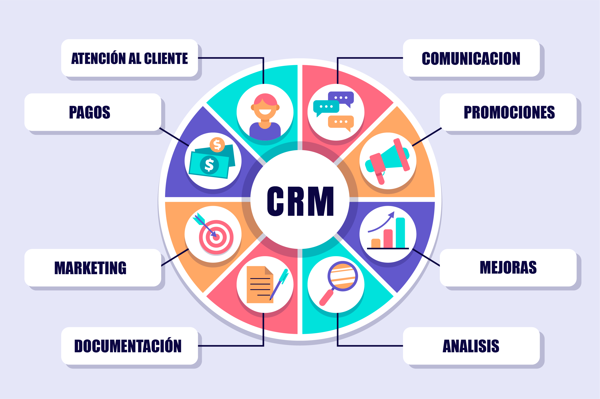

Sistemas de gestión de información (CRM)
¿Qué son los CRM?
Un CRM (Customer Relationship Management) es un conjunto de estrategias, prácticas y tecnologías que se utilizan para gestionar las interacciones de una empresa con sus clientes actuales y potenciales.
Un sistema CRM es una herramienta que ayuda a las empresas a gestionar de manera eficiente sus relaciones con los clientes, desde la adquisición y retención hasta la gestión de los datos y el análisis de las interacciones.
Tienen como objetivo
El objetivo principal de un CRM es mejorar la satisfacción del cliente y aumentar la fidelidad del cliente, lo que conduce a un aumento de las ventas y un mejor rendimiento empresarial en general.

Beneficios de CRM en empresas
Los sistemas de CRM (Customer Relationship Management) pueden aportar varios beneficios a las empresas, entre ellos:
Mejora de la gestión de las relaciones con los clientes: Permiten a las empresas mantener un registro detallado de las interacciones con los clientes y proporcionar un mejor servicio al cliente.
Mayor eficiencia en la gestión de ventas: Pueden ayudar a automatizar los procesos de ventas, permitiendo a los equipos de ventas enfocarse en actividades más productivas, como la prospección y el cierre de ventas.
Personalización de la experiencia del cliente: Los CRM permiten a las empresas personalizar la experiencia del cliente y brindar un mejor servicio a través de la comprensión de las necesidades y preferencias de cada cliente.
Mejora de la colaboración entre equipos: Pueden permitir una mejor colaboración entre equipos de ventas, marketing y servicio al cliente, lo que puede mejorar la eficiencia y efectividad en la gestión de los clientes.
Análisis y toma de decisiones informadas: Proporcionan información valiosa para la toma de decisiones empresariales, como los patrones de compra de los clientes, las oportunidades de ventas y las tendencias del mercado.
Incremento de la lealtad y retención de clientes: Al ofrecer un servicio personalizado y una experiencia satisfactoria al cliente, los CRM pueden ayudar a incrementar la lealtad y retención de los clientes, lo que puede a su vez aumentar los ingresos a largo plazo de la empresa.
Ahorro de tiempo y recursos: Los CRM pueden automatizar muchos procesos y reducir la necesidad de tareas manuales, lo que puede ahorrar tiempo y recursos para la empresa.
En resumen, los CRM pueden ayudar a las empresas a mejorar la satisfacción del cliente, aumentar la eficiencia y efectividad en la gestión de ventas, mejorar la toma de decisiones empresariales y, en última instancia, aumentar los ingresos y la rentabilidad a largo plazo.